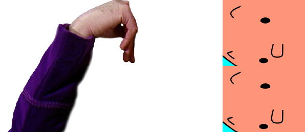
Courage The Cowardly Dog, 1996
 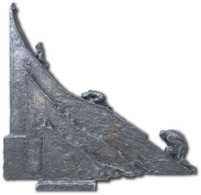
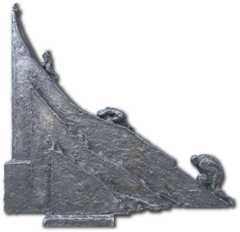
Les Demoiselles d'Avignon, Picasso, 1907
 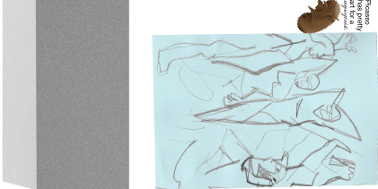
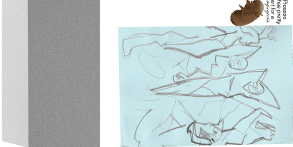
The Myth Of Sisyphus, Albert Camus, 1942
 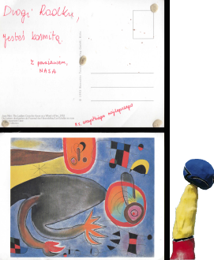
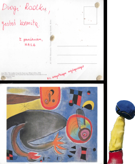
A Mist For Miró, 2020
 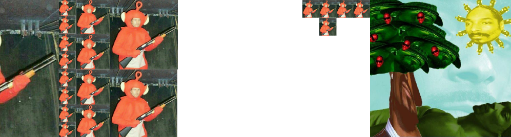
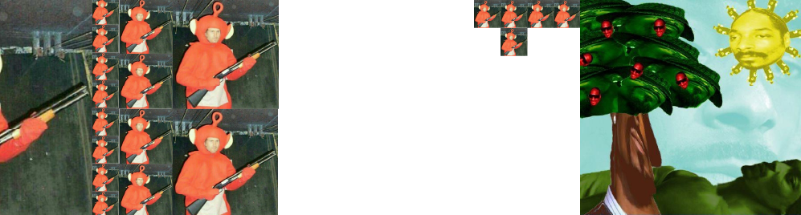
The Battle in The Field, 2020
 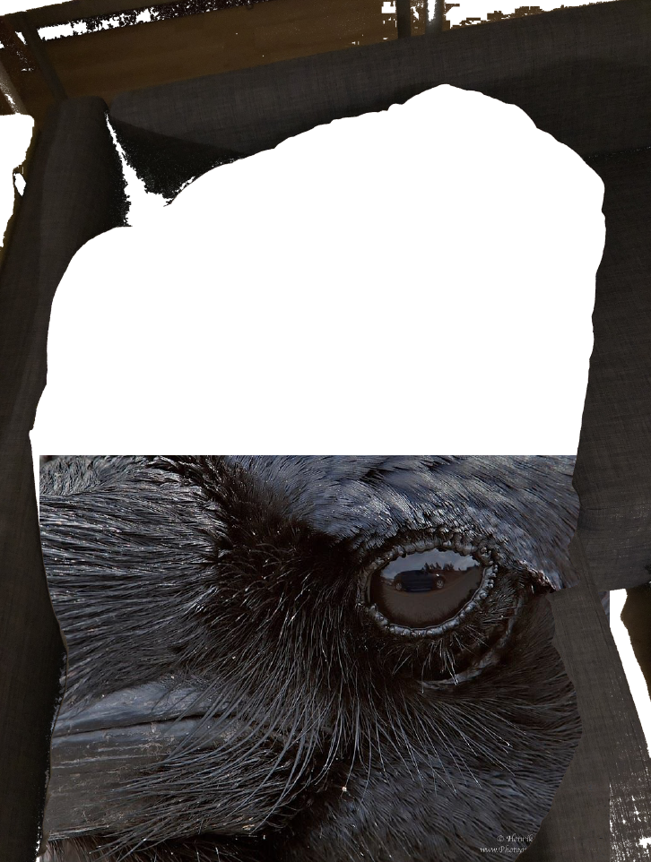
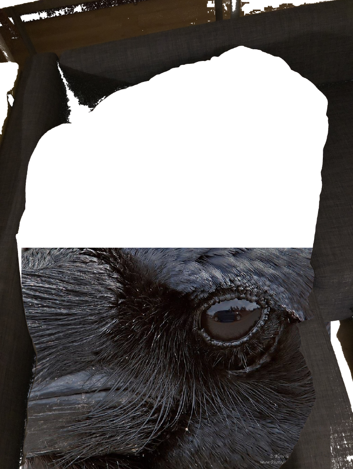
Edgar Allan Poe (January 19, 1809—October 7, 1849)
 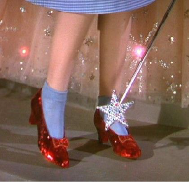
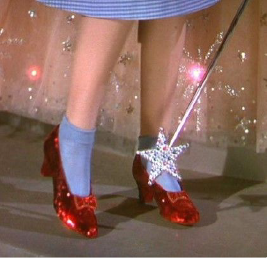
VPRO princess in the land of Oz, 2020
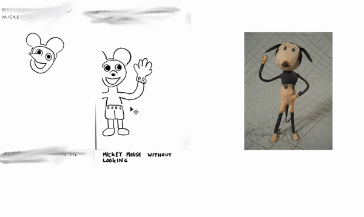
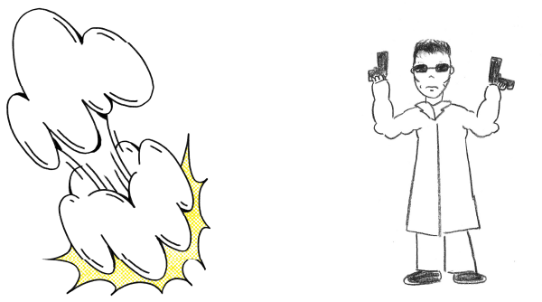
Mickey Mice Love Trouble, 1928
 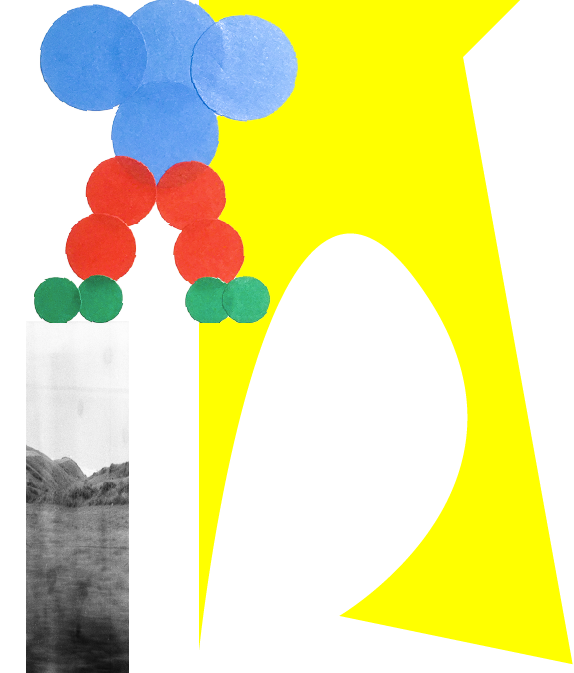
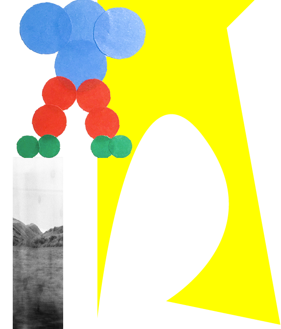
Picasso Girl Resting On His Bed, 2020


Gremlins Laying Eggs, 2020
The flat, muddy, moving objects in this Sculpture Garden have been sketched, merged and raised on a pedestal by Kristiāna Marija Sproģe.
Each sculpture have been made from visual materials gathered or created by Kristiāna's collegues and friends from
Royal Academy Of Arts graphic design department's 3rd year, 2020.
Each sculpture have been made from visual materials gathered or created by Kristiāna's collegues and friends from
Royal Academy Of Arts graphic design department's 3rd year, 2020.
The flat, muddy, moving objects in this Sculpture Garden have been sketched, merged and raised on a pedestal by Kristiāna Marija Sproģe.
Each sculpture have been made from visual materials gathered or created by Kristiāna's collegues and friends from
Royal Academy Of Arts graphic design department's 3rd year, 2020.
"Courage The Cowardly Dog"—Kristiāna Marija Sproģe;
(pedestal) Mika Schalks, Timo Tiffert.
"Les Demoiselles d'Avignon"—Radosław Jakub Górniak, Ocean Albin, Kristiāna Marija Sproģe, Ian Porfirio Scheufler;
(pedestal) Adriana Navarro Villacampa, Ian Porfirio Scheufler, Radosław Jakub Górniak.
"The Myth Of Sisyphus"—Karoliina Parnanen, Ian Porfirio Scheufler;
(pedestal) Kristiāna Marija Sproģe.
"A Mist For Miró"—Eunjin An, Malik Saïb-Mezghiche;
(pedestal) Radosław Jakub Górniak, Eunjin An.
"The Battle in The Field"—Kristiāna Marija Sproģe;
(pedestal) Hyunji Kim, Ian Scheufler.
"Edgar Allan Poe"—Karoliina Parnanen, Kristiāna Marija Sproģe, Eunjin An, Adriana Navarro Villacampa;
(pedestal) Hyunji Kim, Adriana Navarro Villacampa.
VPRO princess in the land of Oz—Kristiāna Marija Sproģe;
(top heart) Hyunji Kim;
(pedestal) Hyunji Kim.
Mickey Mice Love Trouble—Fabiola van der Berg, Eun Zee Lee, Kristiāna Marija Sproģe;
(pedestal) Ian Scheufler, Eun Zee Lee.
Picasso Girl Resting On His Bed—Radosław Jakub Górniak, Kristiāna Marija Sproģe;
(pedestal) Hyunji Kim, Timo Tiffert, Timo Tiffert
Gremlins Laying Eggs—Karoliina Parnanen, Kristiāna Marija Sproģe, Sacha van Alfen;
(pedestal) Ocean Albin, Mika Schalks, Hyunji Kim,
2020, Kristiāna Marija Sproģe
Each sculpture have been made from visual materials gathered or created by Kristiāna's collegues and friends from
Royal Academy Of Arts graphic design department's 3rd year, 2020.
Visuals used for sculptures and pedestals made by (in the order of appearance of elements):
"Courage The Cowardly Dog"—Kristiāna Marija Sproģe;
(pedestal) Mika Schalks, Timo Tiffert.
"Les Demoiselles d'Avignon"—Radosław Jakub Górniak, Ocean Albin, Kristiāna Marija Sproģe, Ian Porfirio Scheufler;
(pedestal) Adriana Navarro Villacampa, Ian Porfirio Scheufler, Radosław Jakub Górniak.
"The Myth Of Sisyphus"—Karoliina Parnanen, Ian Porfirio Scheufler;
(pedestal) Kristiāna Marija Sproģe.
"A Mist For Miró"—Eunjin An, Malik Saïb-Mezghiche;
(pedestal) Radosław Jakub Górniak, Eunjin An.
"The Battle in The Field"—Kristiāna Marija Sproģe;
(pedestal) Hyunji Kim, Ian Scheufler.
"Edgar Allan Poe"—Karoliina Parnanen, Kristiāna Marija Sproģe, Eunjin An, Adriana Navarro Villacampa;
(pedestal) Hyunji Kim, Adriana Navarro Villacampa.
VPRO princess in the land of Oz—Kristiāna Marija Sproģe;
(top heart) Hyunji Kim;
(pedestal) Hyunji Kim.
Mickey Mice Love Trouble—Fabiola van der Berg, Eun Zee Lee, Kristiāna Marija Sproģe;
(pedestal) Ian Scheufler, Eun Zee Lee.
Picasso Girl Resting On His Bed—Radosław Jakub Górniak, Kristiāna Marija Sproģe;
(pedestal) Hyunji Kim, Timo Tiffert, Timo Tiffert
Gremlins Laying Eggs—Karoliina Parnanen, Kristiāna Marija Sproģe, Sacha van Alfen;
(pedestal) Ocean Albin, Mika Schalks, Hyunji Kim,
2020, Kristiāna Marija Sproģe